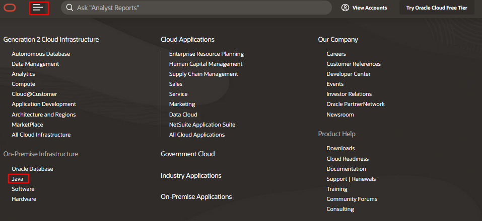

Windows 上安装开发环境：
1下载
需要下载java开发工具包JDK(java development kit java开发工具包 )
Oracle( 2010年Oracle收购了Sun Microsystems公司)官网寻找jdk旅途：
登录https://www.oracle.com/index.html ， 单击Menu图标，选择java

https://www.oracle.com/java/ 点击Try for free

跳转到jdk下载页面

different versions of JDK
JDK8

JDK13

JDK14

2安装
JDK8支持windows32/64 linux32/64安装
JDK13/14 只支持 windows64, linux64, macOSX64安装
jdk zip版：jdk的zip是绿色版本，无需安装，直接解压为文件夹，放置回到指定路径下就可以运行
jdk installer版： jdk的安装版需要手动设置安装路径进行安装
linux tar.gz版： 免安装版, 直接解压到指定目录即完成安装。
linux rpm版： 可以理解为安装版，方便用户安装、升级和从系统中删除
把rpm包拷贝到何时路径下，比如：/opt/software,
给安装包赋予运行权限 chmod 755 xxx.rpm
安装该rpm安装包 rpm -ivh jdk-7u4-linux-i586.rpm
“-i”参数指明是要安装这个package，而“-v”这个参数则使输出信息增加，“-h”表示在安装过程中显示hashes作为在安装过程的一个进度条。
3 JDK目录结构

-bin目录: JDK开发工具的可执行文件 javac.exe, java.exe, javadoc.exe
-jre: Java 运行时环境的根目录，包含解释器java.exe(Java虚拟机)，运行时的核心类包(rt.jar),但不包含编译器javac.exe(开发环境中的开发工具)；主要作用是运行class文件
-lib: 它包含支持 JDK 工具的非核心类，比如tools.jar
-src.zip: java核心类库的源代码，编译后就是运行时类库rt.jar中的class文件
JDK JRE JVM 三者关系

JDK包含java工具(编译器javac.exe ，解释器java.exe, javadoc.exe)和JRE运行环境
JRE包含bin(包含java.exe等可理解为JVM）和lib核心类库
jre/bin/java.exe,这里的java.exe是解释器，和jdk/bin/java.exe是一样的, 都是把字节码解释成机器码
编译运行期间都需要jre中的核心类库
4 OS配置环境变量( JAVA_HOME, PATH, CLASSPATH )
环境变量 就是英文直译：Environment Variable ,这里配置的是操作系统级别的环境变量
变量，知道吧？
对，就是可以随意给其赋值的一个存储单元。
那么环境呢？
首先，你把操作系统当做是一个最大的软件，其它软件如Office、JVM、LOL等等都是运行在这个软件之内的小软件。那么，相对于这些小软件来说，它们所处的「环境」就是操作系统这个软件。
「环境变量」就是操作系统这个大软件中的变量，即：操作系统提供给应用软件的的全局变量！
这个全局变量在操作系统或者任何程序应用中可以使用！
环境变量可以在配置好环境变量的os中的任意shell或者脚本或者程序使用
变量名：JAVA_HOME //方便引用；其它应用(Tomcat)启动时候会读取该变量，通过该变量去使用java环境
变量值：C:\Program Files (x86)\Java\jdk1.8.0_91
变量名：Path // javac xxx; java xxx; java -jar xxx; java -cp xxx 等命令行等会使用
变量值：%JAVA_HOME%\bin;%JAVA_HOME%\jre\bin;
变量名：CLASSPATH
变量值：.;%JAVA_HOME%\lib\dt.jar;%JAVA_HOME%\lib\tools.jar; //记得前面有个"."
* dt.jar是关于运行环境的类库，主要是用于swing的包，如果不使用可以不配置。
* tools.jar是工具类库,它是系统用来编译一个类的时候用到的 也就是javac的时候用到
总结： 在JDK1.5之后的版本，配置Java环境变量的时候我们不再需要配置classpath，只需要配置Java_Home以及path即可！
java代码获取os环境变量：
// 打印指定的os环境变量
final String env = System.getenv("PATH");
System.out.println(env);
// 打印所有环境变量
final Map<String, String> envMap = System.getenv();
for (Map.Entry<String, String> env : envMap.entrySet()) {
System.out.println(env.getKey() + "=" + env.getValue());
}
测试环境变量
1、"开始"->"运行"，键入"cmd"；
2、键入命令: java -version、java、javac 几个命令，出现以下信息，说明环jaj境变量配置成功；
epanhai@CN-00001193 MINGW64 ~/Desktop
$ java -version
java version "1.8.0_201"
Java(TM) SE Runtime Environment (build 1.8.0_201-b09)
Java HotSpot(TM) 64-Bit Server VM (build 25.201-b09, mixed mode)
epanhai@CN-00001193 MINGW64 ~/Desktop
$ javac
Usage: javac <options> <source files>
where possible options include:
-g Generate all debugging info
-g:none Generate no debugging info
-g:{lines,vars,source} Generate only some debugging info
-nowarn Generate no warnings
-verbose Output messages about what the compiler is doing
-deprecation Output source locations where deprecated APIs are used
-classpath <path> Specify where to find user class files and annotation processors
-cp <path> Specify where to find user class files and annotation processors
epanhai@CN-00001193 MINGW64 ~/Desktop
$ java
Usage: java [-options] class [args...]
(to execute a class)
or java [-options] -jar jarfile [args...]
(to execute a jar file)
where options include:
-d32 use a 32-bit data model if available
-d64 use a 64-bit data model if available
-server to select the "server" VM
The default VM is server.
epanhai@CN-00001193 MINGW64 ~/Desktop
$ echo $JAVA_HOME
C:\Program Files\Java\jdk1.8.0_201
Note:
1 JAVA_HOME、PATH、CLASSPATH(大小写无所谓)
2 如果使用 1.5 以上版本的 JDK，不用设置 CLASSPATH 环境变量（jdk会在当前路径下加载c'ass文件），也可以正常编译和运行 Java 程序
对于普通class文件，使用命令行时不配置默认从当前路径寻找加载普通class文件，若定义则从定义路径寻找；对于Java的核心类库(核 心 class文件)，默认会从jre/lib等目录下寻找加载
3 由于 win10 的不同，当选中 PATH变量的时候，系统会很方便的把所有不同路径都分开了，不会像 win7 或者 win8 那样连在一起。
4 Dos窗口中操作系统会从PATH中按照顺序从上到下依次遍历java和javac命令

5 在安装新的JDK或者JRE时，可能会将java.exe、javaw.exe、javaws.exe三个可执行文件复制到了
C:\Windows\System32目录
或者
C:\ProgramData\Oracle\Java\javapath

这两个目录被加入到WINDOWS环境变量path中，这时候Dos中运行时会覆盖%JAVA_HOME%\bin中的java.exe;
6 关于JRE_HOME
同样，这也是一个约定的变量，通常指JRE目录。其实大部分Java程序不需要JDK，而是只需要其子集JRE，所以很多程序也会去取这个变量 来用。
例如，Tomcat中某些.bat文件中这样说到：
JAVA_HOME Must point at your Java Development Kit installation.
Using JRE_HOME instead works as well.
JRE_HOME Must point at your Java Runtime installation.
Defaults to JAVA_HOME if empty. If JRE_HOME and JAVA_HOM are both set, JRE_HOME is used.
大意是说：Tomcat去取这俩变量，只要任意一个不为空就行，都不为空就用JRE_HOME了。因为Tomcat不需要JDK中的工具，它只是运行 Java程序而已。这个变量如果你明确知道应用程序只需要设置这个就行（比如上面Tomcat的注释），那么它可以代替JAVA_HOME，且最好 就用这个。
Linux上安装开发环境：
1 oracle官网下载JDK,上传到linux机器某个目录下

官网下载速度太慢，可以到国内开源镜像网站下载,比如：
2安装JDK
创建目录 /opt/software和/opt/java用于存放安装包和解压后的文件
root@aat-server:/opt/software# ls
jdk-8u171-linux-x64.tar
root@aat-server:/opt/software# tar -vzxf jdk-8u171-linux-x64.tar.gz -C /opt/java
查看解压目录，解压完毕意味着安装完成
root@aat-server:/opt/java# ls
jdk1.8.0_171
3 配置环境变量
环境变量大体上是给操作系统的直接上层程序用的，比如Linux中的shell、.sh文件
vi /etc/profile
加入代码： export JAVA_HOME=/opt/java/jdk1.8.0_171
export JRE_HOME=${JAVA_HOME}/jre
export CLASSPATH=.:${JAVA_HOME}/lib:${JRE_HOME}/lib
export PATH=${JAVA_HOME}/bin:$PATH
export 的意思就是将局部变量设置为环境变量
linux下用冒号“:”来分隔路径
PATH=PATH:${JAVA_HOME}/bin表示在保留原来的PATH环境变量的基础上再增加{JAVA_HOME}/bin这个路径作为新的$PATH环境变量

source /etc/profile 使之生效
测试是否安装成功
java -version
java 提示相关useage
javac 提示相关useage
一个坑：root用户下配置完环境变量后，切换到普通用户，执行echo $JAVA_HOME不生效
然后再普通用户下再次 source /etc/profile就起效了
JAVA特性：
1跨平台性

语言跨平台是编译后的字节码文件跨平台。Java源代码首先经过编译器生成字节码，即class文件，该class文件与平台无关，
因为该字节码文件面对的是JVM, 可以把jvm想象成就有北向接口和南向接口，北向接口都是统一接受字节码,南向接口
面向各种不同的操作系统， 把字节码文件翻译成对用操作系统的机器码，机器码这是平台相关的， 所以JVM在不同平
台有不同的实现。
跨平台的直接表现就是：编译一次，处处运行；比如可以把windows下的.class原封不动的放置在linux/mac平台下运行
个人理解，可以把编译器想象成北向面向java源文件，南向面向解释器JVM, 所以编译器和平台无关，那么java源文件是面向编译器的，
所以java源文件也是跨平台的，比如可以把windows下的java源文件原封不动的放在linux/mac平台下编译
所以java字节码和源文件可以跨平台就是他们直接或者间接面向JVM， 而JVM屏蔽了不同操作系统的差异性(JVM不能跨平台)
IDE和JDK之间的关系
SDK是Software Development Kit的缩写，中文意思是“软件开发工具包”， 它为软件的开发提供一个平台
JDK(Java Development Kit)是Sun Microsystems针对Java开发员的产品， 可以认为jdk只是sdk的一种(子集)，是针对java程序开发的一个平台，IDEA是开发工具，JDK是开发环境，开发工具有很多，但是java开发环境只能是jdk
IDEA在新建java工程时候提示选择JDK

IDEA在新建maven工程时候提示选择JDK

点击工程的【Project Structure】-->【SDKs】,发现IDEA会把java的核心类库自动加在classpath

IDEA使用JDK的javac.exe和java.exe
IDEA在编译java源文件时候需要jdk,如果删除jdk,只保留jre,运行时会提示

在我们编辑代码时会自动帮助我们进行语法检查，但是此时不会生成class文件，只有当我们点击运行时会编译成class文件，并且解释执行;
IDEA在解释字节码文件时需要JDK
idea用的是jdk/bin/java.exe

如果删除jdk/bin/java.exe，会报如下错误：

测试发现：IDEA用的是jdk/bin/javac和jdk/bin/java进行编译和解释